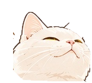

從底層原理
真正理解電腦科學
不只記住定義，更要看懂每一步為什麼成立。
九套互動教材，從以 C++ 打底的計算機概論出發，到作業系統、計算機結構、組合語言與計算機網路，結合離散數學、線性代數、資料結構與演算法，一路探索人工智慧與大型語言模型。
探索你的學習實驗室
每門課都包含 ELI5 白話理解、技術原理、可操作的模擬與自我測驗。
ICS LAB
計算機概論：從數字系統、資料表示、邏輯閘、CPU、作業系統與網路，到以 C++ 為主的程式設計：條件、迴圈、函式、陣列、字串、指標、類別與遞迴。
OS LAB
作業系統：從 CPU 指令、System Call、行程與執行緒，到排程、同步與死結、虛擬記憶體、檔案系統、I/O 與效能分析。
DM LAB
離散數學：從邏輯、集合、關係與證明，到數學歸納、組合計數、遞迴、數論、圖論和自動機。
DSA LAB
資料結構與演算法：從記憶體、Big-O 與基礎容器，推進到樹、圖、排序、搜尋與動態規劃。
LA LAB
線性代數：從向量、矩陣、內積、線性變換，到特徵值、SVD、PCA 與 Attention。
AI LAB
人工智慧演算法與模型：從向量、微分與梯度下降，走到神經網路、Transformer、LLM、RAG 與 Agent。
CO LAB
計算機組織與結構：二進位、邏輯閘、ISA、資料路徑、流水線、Cache、記憶體階層、多核心與 GPU。
ASM LAB
組合語言：以 RISC-V RV32I 為主線，從暫存器、位元、Load/Store、分支、堆疊一路到 Pipeline，並使用可逐步執行的 CPU 模擬器。
NET LAB
計算機網路：由上而下從 HTTP、DNS 與 Socket，到 TCP 可靠傳輸與壅塞控制、IP 定址與路由、乙太網路與 ARP，最後是 TLS 與一個網頁請求的一生。
推薦學習路線
可以依興趣自由跳章；若希望從根本建立系統性的理解，建議先培養 OS 與離散數學直覺，再逐步進入資料結構、演算法和 AI。
先打好計算機與程式基礎
ICS LAB：認識資料怎麼變成位元、CPU 怎麼執行指令，並用 C++ 親手寫出第一批程式；之後每門課都會用到。
先理解電腦如何執行
OS LAB：從 CPU 指令、作業系統核心、行程、執行緒，到記憶體與 I/O，建立底層直覺。
看懂 CPU 與硬體資料路徑
CO LAB：從邏輯閘、指令集與流水線，到快取、記憶體、平行運算；連結 OS 的抽象與實際硬體。
再建立推理與證明能力
DM LAB：學習命題、集合、量詞、計數與圖論，理解演算法正確性與模型背後的數學結構。
接著理解資料如何組織
DSA LAB：掌握資料結構、時間與空間複雜度，練習拆解問題並選擇適當的演算法。
建立模型運算的數學基礎
LA LAB：理解向量、矩陣、投影、特徵值與奇異值分解，再進入機器學習模型。
最後理解模型如何學習
AI LAB：由數學基礎進入機器學習與深度學習，逐步探索 Transformer 與智能體。
親自控制 CPU 的指令執行
ASM LAB：從組合語言直接觀察暫存器、位址、分支與記憶體的變化，將 CO LAB 的硬體概念落實到指令層。
讓電腦彼此對話
NET LAB：從應用層一路往下拆解封包，用時序圖看懂 TCP 握手、重傳與壅塞控制，再到 IP 路由與乙太網路；建議先修 ICS 與 OS。

歐雷幫你顧著進度。各套教材的測驗、筆記與進度由各自網站在你的瀏覽器本機保存。入口網只負責導覽，不會讀取或同步課程資料（楓之谷外觀的等級只讀各課留下的經驗值總和）；切換裝置或清除瀏覽器資料時，進度可能不會保留。